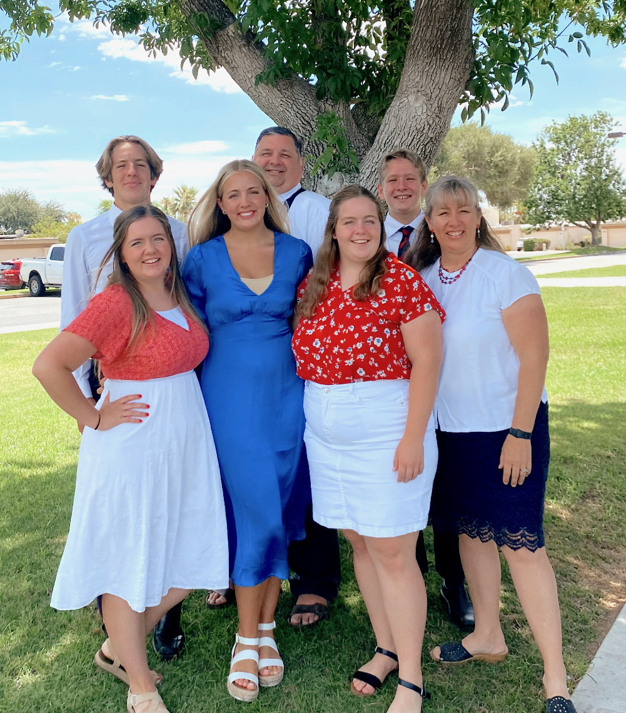

About Me
Vern Wolfley
Let me introduce myself to you! I am married to my wonderful wife Kindy, and we have 5 awesome children. Most of us currently reside in hot and sunny Phoenix, Arizona. I say most of us because I have a daughter who is currently attending BYU Provo and another daughter who is currently serving a mission in the Santiago Chile North Mission.
I already have a degree in Biomedical Engineering from Arizona State University, and a Masters degree in Geographic Information Systems (GIS) also from ASU, but I am taking some classes from BYU-I to improve my computer and programming skills. BYU-I has a wonderful collection of certificates in these fields.
I currently work for the Maricopa Association of Governments (MAG) as a GIS Engineer/Developer. I am also an early morning seminary teacher which is super rewarding.
Between work, school, and my church calling I don't have lots of free time, but with the time I have I enjoy building things in my garage and getting out doors to hunt, fish, and camp.